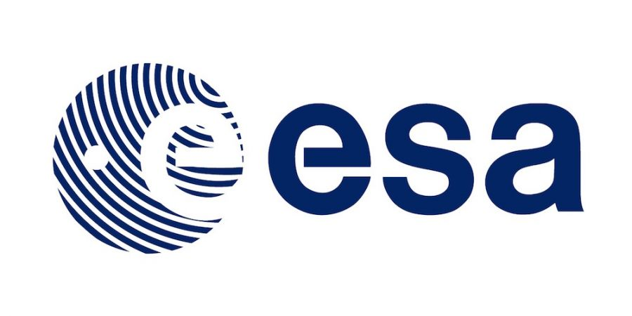

L'Agenzia spaziale europea, nota internazionalmente con l'acronimo ESA dalla denominazione inglese European Space Agency, è un'agenzia internazionale fondata nel 1975 incaricata di coordinare i progetti spaziali di 22 Paesi europei.
Il suo quartier generale si trova a Parigi in Francia, con uffici a Mosca, Bruxelles, Washington e Houston. Il personale dell'ESA del 2016 ammontava a 2 200 persone (esclusi sub-appaltatori e le agenzie nazionali) e il budget era di 5,25 miliardi di euro. Attualmente il direttore generale dell'agenzia è l'austriaco Josef Aschbacher, il quale ha sostituito il tedesco Johann-Dietrich Wörner il primo marzo 2021.

Fonte: Wikipedia